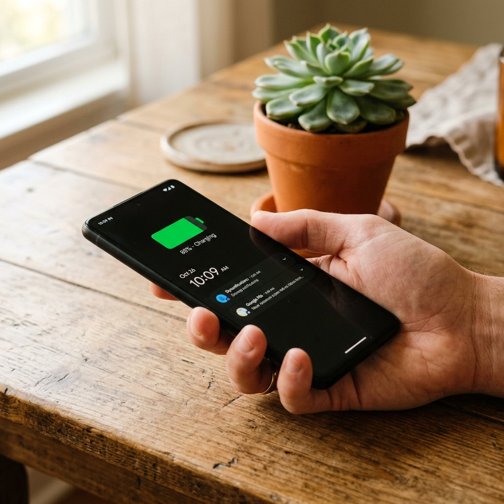

Live Eco-Scanner & Alerts
AI Active | Voice Control: Enabled
Speak: “How do I prep this?”
The Sustainability Hub
Dynamic Impact Translator
-- kg
CO₂e saved
-- kWh
avoided

Local Drop-off Map
AI Upcycling AI Suggestions
(3-Step Carousel)
Custom recipes generated for found items.
AI Upcycling Ideas Awaiting Scan
Scan any waste or recyclable item to generate tailored recipes based on item condition and contamination.
Gamification & Alternative Shop
Eco-Swap Alternative Finder
Recommending products based on your scan history.
Eco-Swap Suggestion:
Scan items to discover sustainable zero-waste alternatives tailored to your habits.
Progress Scoreboard
0 XP
Level 1
0 / 200 XP to Level 2
🔥 Start your streak today
Unlockable badges:
Compost Hero
Material Master
Specialist